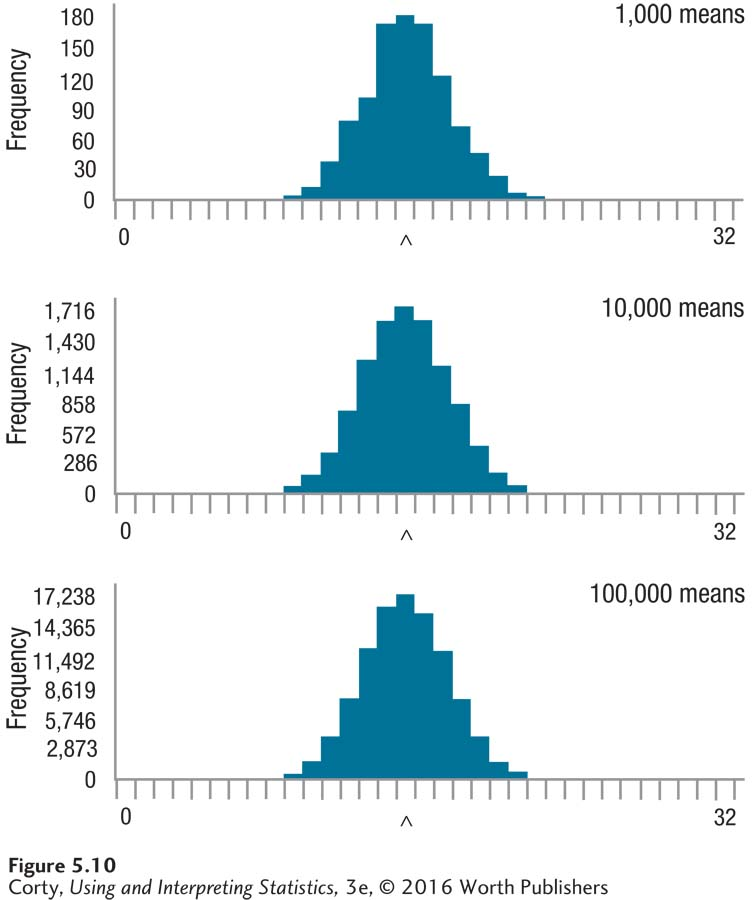

Figure 5.12: Figure 5.10 Sampling Distributions for Increasing Numbers of Samples of 25 Cases Repeated, random samples of size N = 25 were taken from the population shown in Figure 5.7. The caret marks the population mean. A mean was calculated for each sample. The top panel shows the sampling distribution for 1,000 means, the middle panel for 10,000 means, and the bottom panel for 100,000 means. Compare these sampling distributions to those in Figure 5.9, and it is apparent that a larger number of cases in each sample yields a more regularly shaped sampling distribution and a narrower range of values. (Sampling distributions generated online at Rice Virtual Lab in Statistics.)